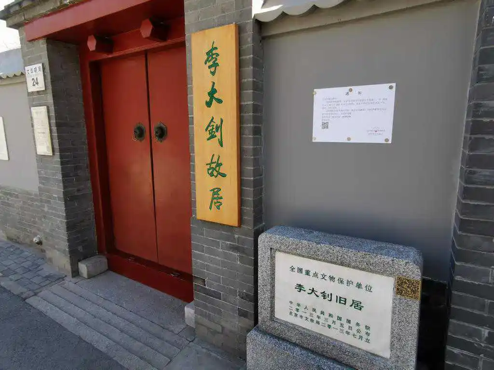
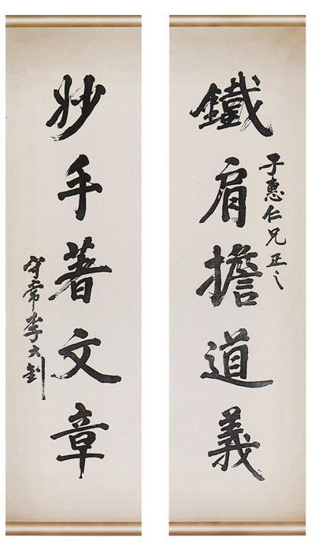
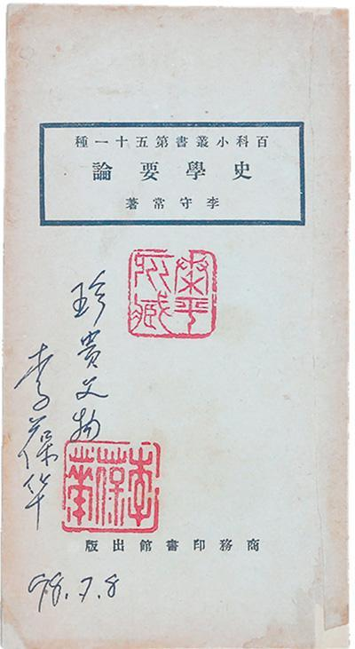
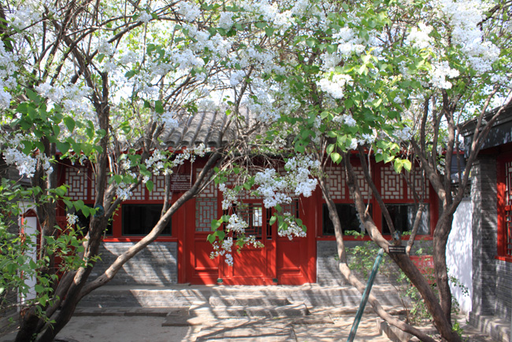
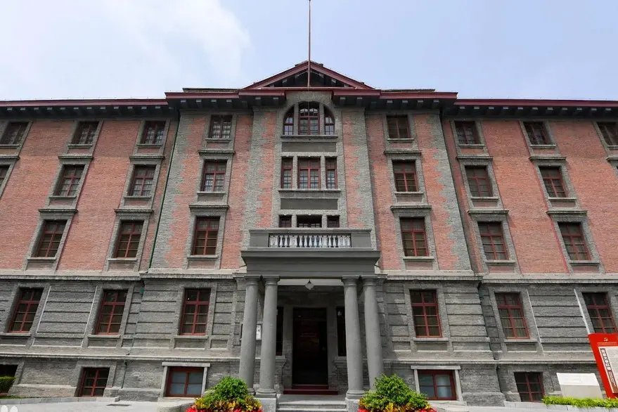

推开北池子大街箭杆胡同20号的大门，一座面积不大的四合院出现在眼前，这里就是1917年《新青年》编辑部由上
海迁至北京后的办公之地，也是当年陈独秀在北京时租住的地方。
“国人而欲脱蒙昧时代，羞为浅化之民也，则急起直追，当以科学与人权并重。”1915年9月，陈独秀在《青年杂志》
创刊号上发表《敬告青年》，第二卷起杂志更名为《新青年》。它的创刊，标志着新文化运动的兴起。《新青年》编
辑部迁京后，迅速成为新文化运动主阵地，成为宣传马克思主义最重要的刊物。一批中国先进知识分子聚集在这座小
院，探索救国救民的道路，传播思想革命的火种。
《狂人日记》《我的马克思主义观》《国际歌》歌词……发表于《新青年》上的一篇篇文章警醒了一大批国人，对中国
共产党的创建，对大革命的兴起，其功赫赫。
《新青年》存在的时间虽然短暂，但为马克思主义的广泛传播做出了巨大贡献。百年光阴，“新青年”三个字，成为了
永不磨灭的红色勋章。

李大钊，字守常，1889年10月29日出生于河北省乐亭县大黑坨村，1927年4月28日被奉系军阀张作霖秘密杀害于北京西交民巷的京师看守所，牺牲时不满38周岁。自1916年从日本弃学归国到1927年就义，这10年他都是在北京度过的。李大钊先后在北京租住过8处住所，石驸马后宅35号是他租住过的第四处宅院。
1920年，北京大学评议会全体通过，议定李大钊为教授兼图书馆主任。李大钊不仅在北京大学任教，还在女子高等师范学校、北京高等师范学校、朝阳大学、中国大学4所高校任教。这里距原北大红楼图书馆相对较近，而且便于他步行去女子高等师范学校(现鲁迅中学)上课，是李大钊在北京居住时间最长的住所。
故居由北房3间，东、西耳房各2间，东、西厢房各3间共计13间建筑组成。倒座三合院是指院子大门朝北开，没有南房，不成四合院规格。站在院中还可以发现，除正房是起脊建筑外，厢房和耳房都是平顶的。进院要先下台阶，说明院子地面低于胡同路面，民间俗称“三级跳坑”，下雨天极易积水。
推开故居北房堂屋大门，首先映入眼帘的是当时老北京普通人家的典型布置：对着门的是一张八仙桌，两侧各放一把椅子，靠北墙的条案两端各摆着一只掸瓶，中间摆着一台老式座钟，条案上方悬挂着一幅中堂画。

中堂画两侧悬挂着一副著名对联——“铁肩担道义，妙手著文章”。李大钊十分敬仰明代忠臣杨继盛的气节，也很欣赏杨继盛“铁肩担道义，辣手著文章”这一诗句，便在此句基础上，取陆游《文章》一诗中“文章本天成，妙手偶得之”的“妙”字，改写成句。李大钊非常喜欢这副对联，多次书写，畅抒己志。1916年8月15日《晨钟报》创刊后，李大钊设计每出一期都要写一句警语，第六号就选了“铁肩担道义”作为该期警语。
李大钊工作繁忙，偶尔闲暇时喜欢写大字练书法。长子李葆华曾回忆父亲：“有一阵，他极好书法，几乎每天都写，写了不少张”。1924年，李大钊为劝章士钊不要倒向北洋军阀政府，应章士钊妻子吴弱男之邀，为其手书对联“铁肩担道义，妙手著文章”相赠。

展柜中摆放的《史学要论》是故居馆藏一级文物。1924年5月，商务印书馆出版了李大钊的《史学要论》一书，这是20世纪中国马克思主义史学理论奠基石，也是李大钊史学思想的精粹之作。当时教授上课没有固定教材，李大钊写就《史学要论》后，去商务印书馆印刷了一些，当作教材发给学生，因受众量小、存世量少，显得格外珍贵。
唯物史观是李大钊学术生涯中投入大量精力研究的问题，1920年10月起，他在北京大学开设了“唯物史观研究”课程。展柜中陈列着1923年北京大学政治系学生参加该课程考试的试卷复制品。这是一篇论文——“试述马克思唯物史观的要义并其及于现代史学的影响”，字迹工整，全文不分段，没有使用新式标点，只用顿号断句。作者在论文中认为“自有马氏唯物史观，才把历史学提到与自然科学同等的地位，此等功绩，实为历史界开一新纪元，是影响于史学上最大之点”，结尾盛赞“马氏真不愧为纪元人”。李大钊将该试卷评定为95分。
女儿李星华随父亲来到石驸马后宅35号居住时刚满9岁，是小学三年级学生，每天跟哥哥李葆华到孔德学校上学。一个夏日晚上，院子里的晚香玉开得白一片黄一片的，满院子飘散着浓郁花香，李大钊和家人坐在树下乘凉。他一高兴，又朗诵起古诗来，李星华也背诵起了《石壕吏》。李大钊趁机给女儿讲起了《卖炭翁》《石壕吏》《孔雀东南飞》，他说这几首诗写了卖炭人的穷苦生活、官府抓兵的暴行和封建家庭的黑暗，都是不合理的社会现象，我们应该去改造社会……这些画面仿佛就在昨天。
1920年春至1924年1月，4年时间，这处院落见证了李大钊传播马克思主义、参与创建中国共产党、领导北方工人运动、促成第一次国共合作等一系列最具代表性的革命实践，为我们今天缅怀先烈、学习历史提供了切实可感的空间。

宫门口三条二十一号鲁迅故居,是鲁迅先生在京的最后一处寓所，也是鲁迅在京四处故居中唯一列为全国重点文物保护单位，保存得最完整的一处遗址。
1923年10月30日，鲁迅买下这个6间旧屋的小宅院，议价800元。由于原有的6间旧房十分破旧，只有翻建才能居住，为了节省开支，10月31日，鲁迅亲自绘制房屋改建图3张（即现在的鲁迅故居规模）；12月2日，订立买房契约，付原房主500元。1924年1月2日，付清原房主购房余款300元，之后即开始施工，1924年2月1日收到京师地方审判厅登记处的房屋《登记通知书》，5月24日完工。由于当时鲁迅的经济十分拮据，这所房子是向老朋友齐寿山、许寿裳各借了400元买下的，这笔借款直到1926年鲁迅去厦门教书时才陆续还清。
1924年5月25日，鲁迅先生和朱安夫人搬到这里居住，不久鲁迅的母亲也搬到这里居住。当时的阜成门一带是北京比较穷苦的住宅区，居住的大多是靠体力为生的平民百姓，市政设施很差，既没有电灯，也没有自来水，胡同的道路是土路、煤渣铺成的，风天黄沙飞舞，雨天道路泥泞。西三条胡同宽三米，长约400米，鲁迅居住的21号院位于胡同的中间地带。鲁迅故居面积约400平方米，有北房三间，南房三间，东西厢房各两间。院内的格局布置，室内的陈设展示，都保存着鲁迅先生当年居住时的模样，院中先生当年手植的两棵丁香花，依然枝繁叶茂，生机盎然。在西三条居住的两年多时间里，鲁迅主编和指导青年人编辑了《语丝》周刊、《莽原》周刊、《莽原》半月刊、《国民新报副刊》等刊物。指导成立了“未名社”、“莽原社”等青年文学团体。编辑《未名丛刊》、《乌合丛书》，还为不少青年作者编选辑、写序言、校改文稿和译稿。完成了《嵇康集》的校勘；翻译了《苦闷的象征》、《出了象牙之塔》；写下了散文集《野草》，小说集《彷徨》中的大部分作品，杂文集《华盖集》、《华盖集续集》以及《坟》、《朝花夕拾》中的大部分作品200多篇。

北大红楼是伟大建党精神的孕育地。深入挖掘北大红楼的标志性的红色遗产，守护红色资源、传承红色血脉，对于进
一步学习、认识、领悟“七一”重要讲话精神和党的十九届六中全会精神，具有重要意义。
建党精神和建党实践过程，是党的精神源头和实践起点。一百年前，身处“国家蒙辱、人民蒙难、文明蒙尘”的前所未
有的劫难，以李大钊、陈独秀为代表的一大批先进知识分子在黑暗中寻找出路，他们汇聚在北大红楼，发动文化启
蒙，唤起民族觉醒，传播马列真理，酝酿建党，培育英才，其初心使命就是为中国人民谋幸福、为中华民族谋复兴。
初心使命是贯穿我们党百年奋斗史的一条红线，也是我们学习践行伟大建党精神的红线。今天，穿越百年历史，回顾
世纪征程，展望光明前景，我们回到原点、追溯源头，在北大红楼研究伟大建党精神，应该更加明确牢记初心使命、
更加全面研究先驱者的思想和实践。
红楼是红色的，不仅是因为红墙，更是因为红墙里的红心。先驱者们在北大红楼的阵地中，探索追求、拼搏奋斗，是
伟大建党精神孕育和形成的具体、直接的贡献者，在中国共产党百年历史奋斗进程中作出了重大贡献。
北大红楼是建党精神和创党实践的源头地，是党和共产主义运动的发祥地。在中国早期革命奋斗史中，有一大批红色
革命基地和旧址，而北大红楼无疑是其中重要而独特的标识地。
北大红楼有两大基本特点，第一“红”，第二“早”，“红”是共有特点，“早”是独有特点。北大红楼在党的革命历史上
是独一无二的、不可代替的，党和国家对于北大红楼的重视，不是主观偏好，而是由其历史地位和性质决定的。北大
红楼最重要的价值，在于它是我们党的创始的起点和源头。红楼所折射出的，是中国共产党的创建、伟大建党精神的
形成、中国革命活动的风起云涌。
北大红楼象征着三个“高地”，其一是思想文化的领军高地，其二是先驱者的培育高地，其三是追求真理、寻找主义、
践行主义的实践高地。
归根到底，北大红楼能够成为伟大建党精神的孕育地，就是因为有一颗赤子之心。赤子之心是百年红楼的“魂”，寻找
主义、寻找真理是它的“根”，找到了这个真理并为之奋斗，就是红楼的主线和先驱者的共同标识。
以李大钊为代表的建党先驱的创党实践和建党精神的孕育形成的先驱主体，为创建党和形成伟大建党精神作出不可替
代的伟大贡献。在北大红楼红色资源的形成过程中，先驱者们居功至伟，李大钊无疑是其中最重要的代表。李大钊的
一生奋斗历程有两大特点，救民于水火、救国于危难。在北大红楼，李大钊连续发表重要文章，深刻揭示一战胜利、
十月革命爆发的本质原因，深情呼唤新纪元，成为中国第一个马克思主义者。
以李大钊为代表的北大红楼人带着赤子之心，找到了主义，确立了社会主义信仰。李大钊是创建中国共产党的思想
者、组织者、实践者，为共产党的创建作出了不可替代的贡献，也为伟大建党精神的形成作出了直接的贡献。同时，
他也是践行伟大建党精神的榜样，建党精神的特质在李大钊身上都能体现出来。他用38年的光辉人生，为伟大的革命
事业献出生命，高度诠释和践行了伟大建党精神。